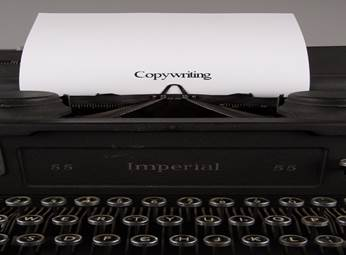
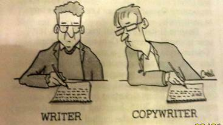
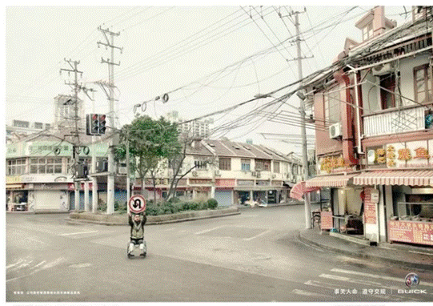

Copywriting: Bagaimana menjadi seorang copywriter dalam sehari!
Jadi, Disini anda ingin jadi copywriter, kan ?? yappss, it’s very possible. Sebenarnya untuk menjadi copywriter tidak membutuhkan pendidikan formal sama sekali. Bahkan, copywriter terbaik di dunia tidak pernah kuliah atau mengambil kelas menulis. Satu-satunya yang Anda butuhkan adalah komputer dan koneksi Internet. Segalanya bisa dipelajari, jika Anda dapat menulis surat kepada teman, Anda memiliki semua kualifikasi yang Anda butuhkan untuk memulai sekarang. Karir sebagai freelance copywriter merupakan pekerjaan yang sangat menyenangkan. Anda dapat bekerja dirumah, punya waktu untuk tidur siang, punya waktu untuk liburan dan mendapatkan bayaran yang sangat baik. Bahkan, bagian yang terbaik adalah masih banyak ruang dan kesempatan di industri yang sangat besar dan berkembang ini.
Pekerjaan sebagai copywriter ini adalah pekerjaan yang masih sangat-sangat asing di tengah masyarakat dan bahkan sangat diragukan.
Emang bisa ya tulisan itu jadi uang??
Inilah pandangan masyarakat awam.
Buktinya banyak freelance copywriter yang sukses dan berpenghasilan tinggi. Melebihi penghasilan dari pekerjaan umumnya. Sekarang mari kita lakukan langkah-langkah from nothing to professional copywriting, let’s go through the steps:
Step 1. Anda Harus Mengerti Apa Itu Copywriting.

Copywriting pada dasarnya melibatkan penulisan konten tetapi dalam bentuk yang menarik perhatian audiens. Copywriting dibuat dengan tujuan untuk menjual sebuah brand, produk ataupun layanan.
Tidak seperti berita atau penulisan editorial, tulisan dari seseorang copywriter secara langsung ataupun tidak akan memaksa para audiens untuk melakukan tindakan yang diinginkan. Tindakan itu mungkin untuk membeli, ikut serta, atau terlibat dengan produk, layanan, atau perusahaan.
Itulah sebabnya seorang copywriter sering disebut sebagai "seorang salesman di media cetak".
“A good copywriter is not just a writer. They are a keen studier of the human psychology behind purchase decisions! “
Artinya apa? anda harus “masuk” ke otak mereka.
Anda harus mengetahui apa informasi yang paling dibutuhkan oleh calon customer mereka.
Jangan jadi copywriter yang membosankan dan sulit dimengerti
Gunakan bahasa yang sering mereka gunakan. Buat mereka merasa “wah gua banget nih”. Kemudian sediakan informasi tersebut.
Setelah mereka merasa anda adalah orang yang tepat untuk menyelesaikan permasalahan mereka, barulah mereka peduli dengan anda. Sekali lagi, ingat. Mereka tidak peduli dengan bisnis anda, mereka hanya peduli dengan diri sendiri.
Step 2. Memahami Bagaimana Membuat Konten.
Bayangkan betapa banyaknya konten yang harus dikeluarkan oleh banyak perusahaan, contohnya:
- Iklan online dan offline
- Slogan dan tagline
- Buat konten untuk situs web dan untuk setiap produk mereka
- Brosur
- Email campaigns
- Dan masih banyak yang lainnya.
Semua hal ini harus ditulis oleh copywriter
bahkan beberapa perusahaan akan bergantung pada copywriter.
Jadi, seorang copywriter akan dibayar untuk menangani hal-hal ini oleh mereka.
Copywriters menjadi profesi yang mampu menghasilkan ratusan juta pertahun. Bahkan di amerika rata-rata copywriters menghasilkan 55.420 USD atau sekitar 775 juta rupiah pertahun (US Bureau of labor & statistics 2013).
Tetapi, anda harus memahami untuk mendapatkan uang tersebut anda harus menjaga hubungan yang baik dengan perusahaan-perusahaan yang membutuhkan layanan tersebut.
Step 3. Memahami mengapa orang menyewa copywriter.
Anda harus pahami, bahwa tidak semua tulisan anda akan dibaca oleh mereka, padahal semua penawaran ada pada tulisan tersebut. Gimana caranya agar meningkatkan jumlah pembaca di tulisan anda? Agar tujuan dari tulisan anda bisa tercapai.
Berikut cara untuk membuat tulisan jadi lebih menarik:
- Tentukan tujuan konten anda
Sebelum melakukan sesuatu pasti kita akan memikirkan tujuan sebelum kita memulainya.
Ada 7 goals yang dipakai untuk membuat sebuah konten:
- Meningkatkan kunjungan trafic
- Mengikat pelanggan anda
- Membentuk komunitas
- Menginformasikan sesuatu
- Edukasi produk
- Membentuk hubungan dekat dengan pembaca
- Mengarahkan pembaca untuk membeli
Fokus pada salah satu goals tersebut untuk memudahkan anda untuk membuat konten yang anda inginkan dan ingin anda sampaikan.
- Buatlah tulisan yang emosional
Para pembaca biasanya sangat suka terhadap sesuatu yang emosional, tulisan yang bisa menyentuh rasa emosionalnya. Membuat tulisan bukan hanya meyediakan apa yang pembaca atau konsumen butuhkan.
Namun, gimana cara membuat skenario dimana mereka menjadi terikat scara emosional dengan kita?
Contoh: iklan membandingkan emosi konsumen
Lowe China menciptakan kampanye pemenang Golden Lion Award ini untuk Shanghai General Motors / Buick yang menampilkan orang-orang sungguhan yang menjadi korban dari pengemudi yang ceroboh.
Mereka berdiri di jalan sambil memegang rambu-rambu yang diabaikan oleh pengemudi. Slogan untuk kampanye keamanan ini adalah, "Rambu-rambu ada karena suatu alasan."
- Jangan terlihat menjual
Ketika anda membuat konten tentang suatu produk upayakan jangan terlihat menjual secara terang-terangan. Kenapa emangnya? Bukannya bagus ya? Kan emang kita disini jualan Iya memang jualan, cuman caranya ga gitu buat narik perhatian dari konsumen kita. Kalo anda terang-terangan fokus pada apa yang anda jual dan mengapa mereka harus membelinya maka para pembaca akan memperlakukan konten kita itu kayak spam Para pembaca atau konsumen engga suka kalo dikasih hal-hal seperti itu terus Mereka lebih suka dikasih edukasi atau manfaat yang akan mereka terima dan solusi yang bisa anda berikan pada bagian akhir. Solusi akan membuat konsumen merasa membutuhkan produk anda dan buatlah konten yang menyenangkan mereka.
Step 4. Belajar mendapatkan klien sebagai copywriter.
Menetapkan diri anda sebagai copywriter sama dengan membangun bisnis dari bawah ke atas.
Anda harus menunjukan bakat anda dalam menulis dan INGAT! Jangan mengharapkan kekayaan secara langsung. karena hal ini tidak akan terjadi dalam semalam untuk sebagian besar copywriter.
Namun saya akan membagikan beberapa cara untuk anda yang ingin mendapatkan klien, let’s go through the tips :
- Banyaklah bergaul
Dengan bergaul anda akan membangun relasi dengan mudah. Banyak teman akan mendapatkan peluang untuk mendapatkan klien dengan mudah.Kecuali, anda memang sudah terkenal dibidang apapun.
Anda akan memiliki peluang kredibilitas lebih besar.
- Banyak membaca
Dengan banyak membaca anda dapat mengasah pengetahuan dan menghasilkan tulisan yang lebih berkualitas. Karena klien itu mempunyai jenis tulisan yang berbeda-beda ada yang berbentuk review, berita maupun dalam bahasa inggris.
- Sering-sering melakukan promosi.
Harus selalu melakukan promosi, promosi ini bisa kita lakukan di medsos, memposting tentang tulisan kita di web ataupun bisa dengan ngobrol dengan teman-teman sekitar.
- Menjalin hubungan yang baik dengan klien
Walaupun klien sudah selesai pesanannya, bukan berarti kita memutuskan hubungan begitu saja. Pernah bekerja sama dan seharusnya tetap menjaga hubungan baik. Saling menyapa dan sharing akan mempermudah kita mendapatkan pesanan baru. Bahkan banyak juga yang akhirnya menjalani kerja sama jangka panjang.
- Jangan pernah putus asa
Karna banyaknya saingan yang tidak kalah berkualitas, anda jadi susah mendapatkan klien. Ingat! Jangan menyerah!
Selama kamu masih mau belajar dan tetap semangat, kesempatan itu masih ada.
Well, mudahkan??
step -step tersebut harus anda pahami sebagai seorang copywriter. I hope this answers your question!
Thank you!


Penulis
Iqbal Adhi